АДРОНЫ: Мезоны (B=0, L=0)
Частица |
Кварковый состав |
Масса, Mc2
(МэВ) |
Время жизни (сек) или ширина |
Спин-четность, изоспин
JP(I) |
Основные
моды распада |
π+,π- |
u, d |
139.57 |
2.6·10-8 |
0-(1) |
νμ+, μ- μ- |
π0 |
u-d |
134.98 |
8.4·10-17 |
0-(1) |
2 |
K+,K- |
u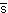, s |
494 |
1.2·10-8 |
0-(1/2) |
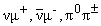 |
K0,K0 |
d, s |
498 |
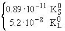 |
0-(1/2)
0-(1/2) |
π+π-,
π0π0 |
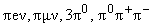 |
η |
u+d, s |
548 |
1.29 кэВ |
0-(0) |
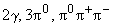 |
η' |
u+d, s |
958 |
0.20 МэВ |
0-(0) |
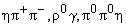 |
ρ±
ρ0 |
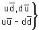 |
776 |
150 МэВ |
1-(1) |
ππ |
ω |
u+d |
783 |
8.5 МэВ |
1-(0) |
π+π-π0 |
φ |
s |
1020 |
4.3 МэВ |
1-(0) |
K+K-,π+π-π0 |
D± |
c, d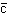 |
1869 |
1.1·10-12 |
0-(1/2) |
|
K
+ другие частицы,
e + другие, μ + другие |
D0,D0 |
c,
u |
1865 |
4.2·10-13 |
0-(1/2) |
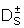 |
c,
s |
1969 |
4.7·10-13 |
0-(0) |
K + другие |
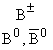 |
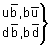 |
5279 |
1.7·10-12 |
|
0-(1/2) |
D0+др,
D*+др |
|
1.5·10-12 |
0-(1/2) |
ν+др, D++др, D*+др |
J/ψ |
c |
3097 |
91 кэВ |
1-(0) |
адроны, e+e-,μ+μ- |
Y |
b |
9460 |
53 кэВ |
1-(0) |
τ+τ-,e+e-,μ+μ- |
|